35+ Easy Christmas Appetizers for a Crowd
📌 Save to Pinterest
Christmas appetizers set the tone for the whole evening: guests gather around the table, graze, talk, and go back for seconds before dinner is even served. This roundup gathers thirty-five easy appetizers that work for a crowd — dips you can scoop, bites you can pick up with one hand, cheese boards that look like a centerpiece, and warm starters straight from the oven. Pick a few from each group, and the table takes care of itself.
How to plan appetizers for a crowd
Plan for variety, not volume: a dip, something on a stick, something cheesy, something warm, and something sweet covers every guest. Count on a few bites per person per hour, and make the food easy to reach — spread it across the table instead of crowding it in one spot. Keep cold food cold and hot food hot, put out small plates and napkins, and label anything with nuts or pork so guests with allergies can steer clear. Most of the appetizers below can be prepped ahead, so the host can enjoy the party too.
Good to know: Everything is written in American English, and measurements use US customary units — cups, tablespoons, and Fahrenheit — for cooks in the United States. Always follow safe food-handling guidance, and keep perishable appetizers refrigerated until serving time.
Food safety: cook ground meat and fresh sausage to 160°F (71°C), and cook bacon until crisp. Heat pre-cooked sausages and meatballs until steaming hot throughout. Check with a food thermometer.
Dips & spreads
Dips are the easiest crowd appetizer there is: one bowl, a stack of crackers, and everyone helps themselves.
1. Classic Spinach & Artichoke Dip
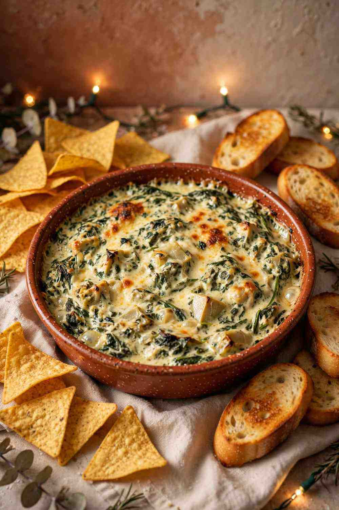
Creamy, cheesy, and always the first bowl to empty. Serve it warm with tortilla chips, toasted baguette slices, or vegetable sticks for dipping.
Ingredients
- 10 ounces frozen chopped spinach, thawed and squeezed dry
- 1 can (14 ounces) artichoke hearts, drained and chopped
- 8 ounces cream cheese, softened
- 1/2 cup sour cream
- 1/2 cup mayonnaise
- 1 cup shredded mozzarella cheese
- 1/2 cup grated Parmesan cheese
- 2 garlic cloves, minced
- 1/2 teaspoon salt
- 1/4 teaspoon black pepper
Directions
- Preheat the oven to 375°F.
- Stir the spinach, artichokes, cream cheese, sour cream, mayonnaise, mozzarella, Parmesan, garlic, salt and pepper together in a bowl.
- Spoon the mixture into a small baking dish and smooth the top.
- Bake for 20-25 minutes, until bubbling and lightly golden on top.
- Let it stand for 5 minutes, then serve warm with tortilla chips, toasted baguette slices, or vegetable sticks.
2. Cranberry Brie Dip
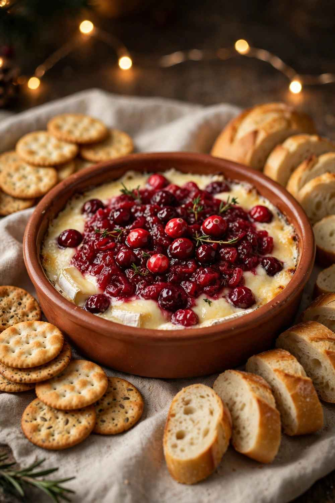
Melted brie topped with cranberry sauce — sweet, tart, and rich all at once. It looks festive in a small baking dish and needs almost no work.
Ingredients
- 1 round brie cheese (8 ounces), rind removed from the top
- 1/2 cup whole-berry cranberry sauce
- 2 tablespoons chopped pecans
- 1 teaspoon chopped fresh rosemary
- 1 tablespoon honey (optional)
Directions
- Preheat the oven to 350°F.
- Place the brie in a small oven-safe baking dish.
- Spoon the cranberry sauce over the top.
- Bake for 15-20 minutes, until the cheese is soft and melty.
- Sprinkle with pecans and rosemary, drizzle with honey if you like, and serve warm with crackers.
3. Whipped Feta with Honey & Herbs
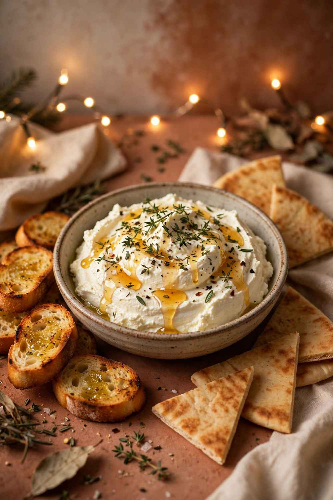
Salty whipped feta drizzled with honey and scattered with fresh herbs. Serve with crostini or warm pita for a dip that tastes far fancier than it is.
Ingredients
- 8 ounces feta cheese, crumbled
- 4 ounces cream cheese, softened
- 2 tablespoons olive oil
- 1 tablespoon lemon juice
- 2 tablespoons honey, plus more for drizzling
- 1 tablespoon chopped fresh herbs (thyme, rosemary, or dill)
- 1/4 teaspoon black pepper
Directions
- Blend the feta, cream cheese, olive oil and lemon juice in a food processor until smooth and creamy, about 2 minutes.
- Spoon the whipped feta into a serving bowl.
- Drizzle with honey and sprinkle with herbs and black pepper.
- Serve with crostini or warm pita triangles.
4. Roasted Red Pepper Hummus
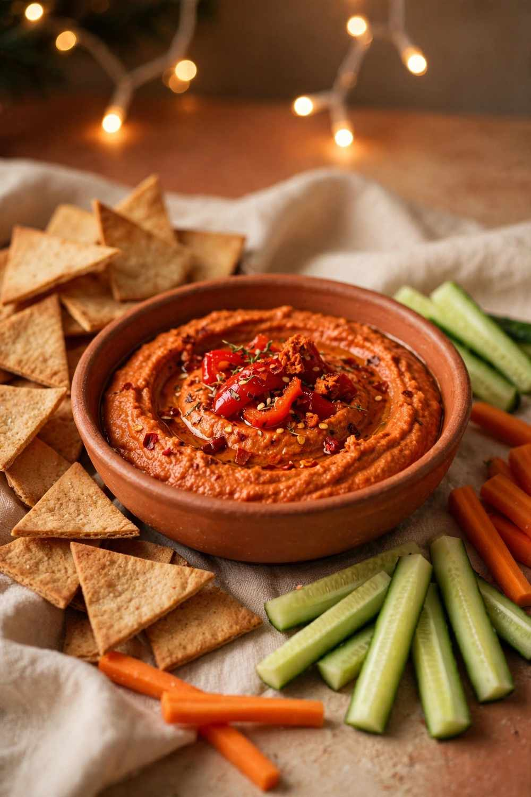
Smooth, smoky hummus with a sweet pepper flavor and a bright finish. A good pick for guests who want something lighter on the table.
Ingredients
- 1 can (15 ounces) chickpeas, drained and rinsed
- 1/2 cup roasted red peppers, drained
- 1/4 cup tahini
- 2 tablespoons lemon juice
- 1 garlic clove
- 2 tablespoons olive oil
- 1/2 teaspoon smoked paprika
- 1/2 teaspoon salt
Directions
- Add the chickpeas, roasted peppers, tahini, lemon juice, garlic, olive oil, smoked paprika and salt to a food processor.
- Blend until smooth, about 2 minutes, scraping down the sides as needed.
- Add 1-2 tablespoons of water if the hummus is too thick.
- Spoon into a bowl, drizzle with olive oil, and serve with pita chips and vegetable sticks.
5. Caramelized Onion Dip
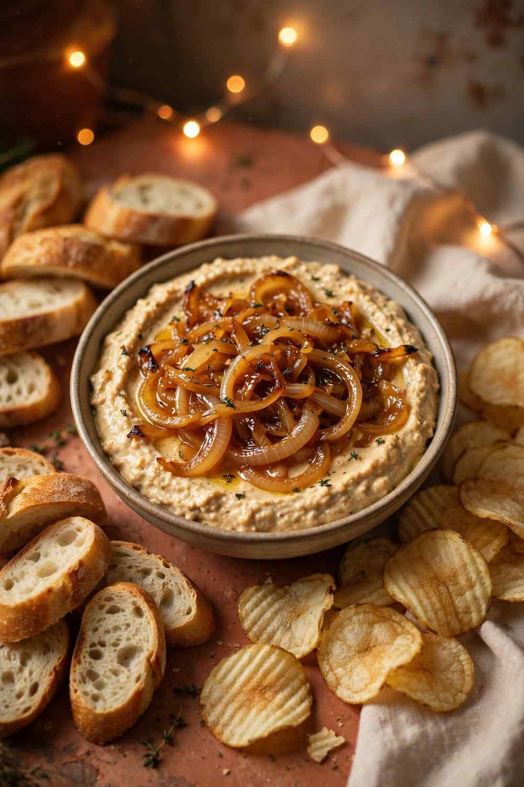
Slow-cooked onions folded into a creamy base make a dip that tastes like the classic, only better. Serve with ridged potato chips or crusty bread.
Ingredients
- 2 large yellow onions, thinly sliced
- 2 tablespoons butter
- 1 tablespoon olive oil
- 1 cup sour cream
- 4 ounces cream cheese, softened
- 1 teaspoon Worcestershire sauce
- 1/2 teaspoon salt
- 1/4 teaspoon black pepper
Directions
- Melt the butter with the olive oil in a skillet over medium-low heat.
- Add the onions and cook slowly for 25-30 minutes, stirring often, until deep golden and sweet.
- Let the onions cool for 10 minutes.
- Stir the sour cream, cream cheese, Worcestershire sauce, salt and pepper together in a bowl.
- Fold in the caramelized onions and chill for at least 30 minutes before serving with chips or crusty bread.
6. Smoky Queso Dip
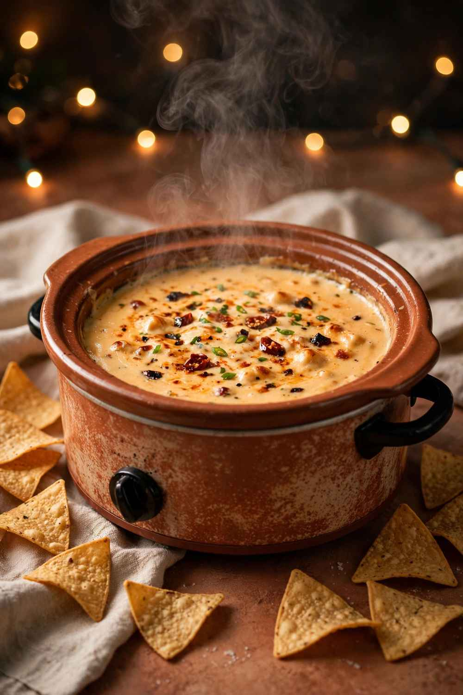
A warm cheese dip with a gentle smoky heat — the one guests hover around. Keep it warm in a small slow cooker so it stays smooth all evening.
Ingredients
- 1 pound white American cheese, cubed
- 4 ounces cream cheese, cubed
- 1 cup milk
- 1 can (4 ounces) diced green chiles
- 1 teaspoon smoked paprika
- 1/2 teaspoon cumin
- 1/2 teaspoon garlic powder
Directions
- Add the cheese, cream cheese, milk, green chiles, smoked paprika, cumin and garlic powder to a slow cooker.
- Cook on low for 1 hour, stirring every 15 minutes, until the cheese is melted and smooth.
- Keep warm on the low or warm setting and serve with tortilla chips.
7. Pomegranate Guacamole

Classic guacamole topped with pomegranate seeds for color and a tart crunch. The red and green make it look made for Christmas.
Ingredients
- 3 ripe avocados
- 1/4 cup pomegranate seeds
- 2 tablespoons lime juice
- 1/4 cup finely diced red onion
- 1 small jalapeño, seeded and minced (optional)
- 2 tablespoons chopped fresh cilantro
- 1/2 teaspoon salt
Directions
- Mash the avocados in a bowl with the lime juice and salt until mostly smooth.
- Fold in the red onion, jalapeño and cilantro.
- Spoon into a serving bowl and scatter the pomegranate seeds on top.
- Serve right away with tortilla chips.
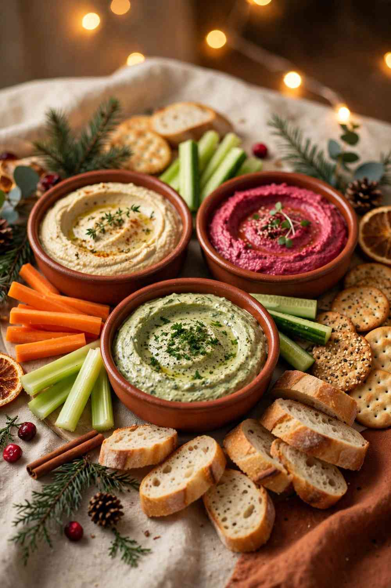
Bites on a stick
Skewers and one-bite starters are made for parties: no plates needed, no mess, and easy to count out for a crowd.
8. Caprese Skewers

Cherry tomatoes, mozzarella, and basil on a toothpick with a drizzle of balsamic. Fresh, bright, and the first thing to disappear from the tray.
Ingredients
- 24 cherry tomatoes
- 24 small fresh mozzarella balls
- 24 fresh basil leaves
- 2 tablespoons balsamic glaze
- 1 tablespoon olive oil
- 1/4 teaspoon salt
- 1/4 teaspoon black pepper
- 24 toothpicks or small skewers
Directions
- Thread a cherry tomato, a basil leaf and a mozzarella ball onto each toothpick.
- Arrange the skewers on a platter.
- Drizzle with olive oil and balsamic glaze.
- Season with salt and pepper and serve.
9. Antipasto Skewers
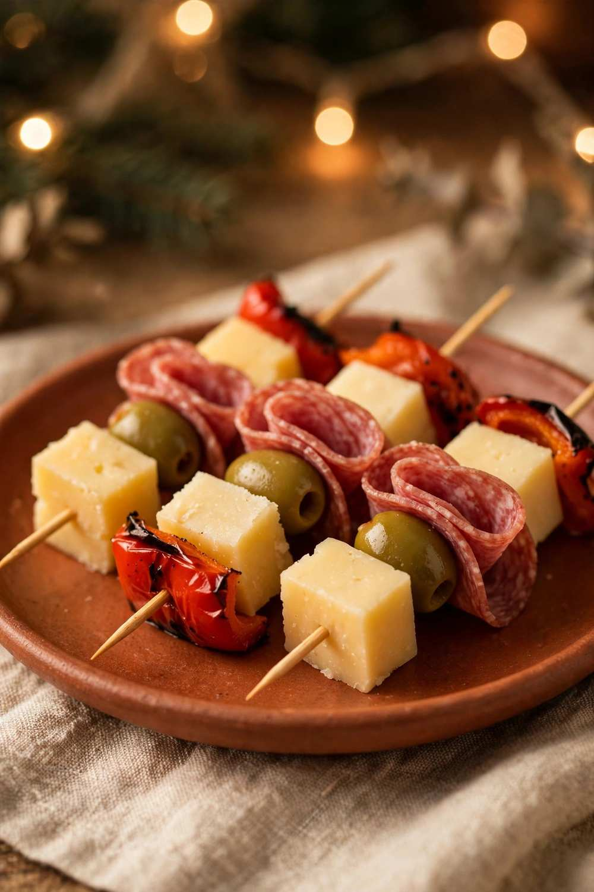
Salami, cheese, olives, and roasted peppers stacked on a skewer — a whole antipasto plate in a single bite.
Ingredients
- 24 slices salami, folded
- 24 small mozzarella balls
- 24 pitted olives
- 24 roasted red pepper strips
- 1 tablespoon olive oil
- 1 teaspoon Italian seasoning
- 24 toothpicks or small skewers
Directions
- Thread a salami slice, a mozzarella ball, an olive and a pepper strip onto each toothpick.
- Arrange the skewers on a platter.
- Drizzle with olive oil and sprinkle with Italian seasoning.
- Serve at room temperature.
10. Cranberry & Brie Bites

Puff pastry cups filled with brie and cranberry sauce, baked until golden. Sweet, creamy, and sized for one perfect bite.
Ingredients
- 1 sheet puff pastry, thawed
- 8 ounces brie cheese, cut into 24 small cubes
- 1/2 cup whole-berry cranberry sauce
- 2 tablespoons chopped pecans
- 1 egg, beaten (for egg wash)
Directions
- Preheat the oven to 375°F and grease a 24-cup mini muffin tin.
- Cut the puff pastry into 24 squares and press each one into a muffin cup.
- Place a cube of brie in each cup and spoon a teaspoon of cranberry sauce on top.
- Brush the pastry edges with beaten egg and sprinkle with pecans.
- Bake for 15-18 minutes, until the pastry is golden and the brie is melted.
- Cool for 5 minutes, then serve warm.
11. Prosciutto-Wrapped Dates

Sweet dates wrapped in salty prosciutto, with a nut tucked inside if you like. They bake in minutes and taste like something from a restaurant.
Ingredients
- 24 pitted Medjool dates
- 24 whole almonds
- 12 slices prosciutto, cut in half lengthwise
- 1 tablespoon honey (optional)
Directions
- Preheat the oven to 375°F and line a baking sheet with parchment paper.
- Tuck an almond inside each date.
- Wrap each date with a half slice of prosciutto and place seam-side down on the baking sheet.
- Bake for 10-12 minutes, until the prosciutto is crisp at the edges.
- Drizzle with honey if you like and serve warm.
12. Bacon-Wrapped Dates
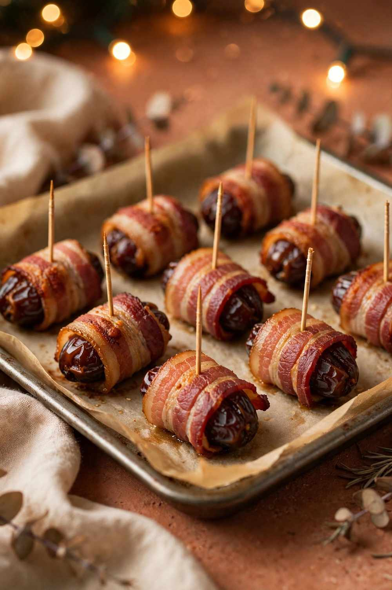
The classic party bite: smoky bacon around a sweet date, crisped in the oven. Make a double batch — they never last.
Ingredients
- 24 pitted Medjool dates
- 12 slices bacon, cut in half crosswise
- 24 toothpicks
- 1 tablespoon brown sugar (optional)
Directions
- Preheat the oven to 375°F and line a baking sheet with parchment paper.
- Wrap each date with a half slice of bacon and secure with a toothpick.
- Place seam-side down on the baking sheet and sprinkle with brown sugar if you like.
- Bake for 18-20 minutes, until the bacon is crisp.
- Drain on paper towels and serve warm.
Food safety: cook the bacon until crisp.
13. Shrimp Cocktail Shooters

Chilled shrimp with cocktail sauce served in small glasses. Elegant, easy to hold, and a refreshing change from the heavier bites.
Ingredients
- 24 cooked large shrimp, peeled and deveined
- 1 cup cocktail sauce
- 1 tablespoon prepared horseradish
- 1 lemon, cut into wedges
- 2 tablespoons chopped fresh parsley
- 24 small shot glasses or cups
Directions
- Stir the cocktail sauce and horseradish together in a bowl.
- Spoon about 2 teaspoons of sauce into each glass.
- Place a shrimp in each glass, tail up, and add a squeeze of lemon.
- Sprinkle with parsley and chill until serving.
14. Cucumber & Smoked Salmon Bites
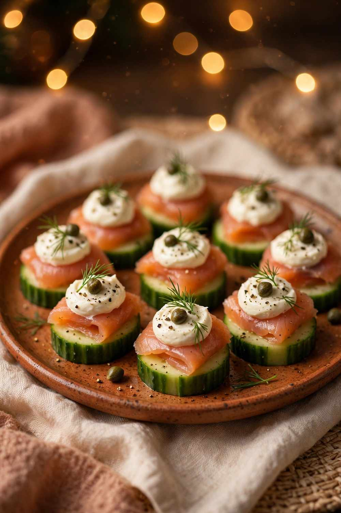
Cool cucumber rounds topped with herbed cream cheese and smoked salmon. Light, pretty, and a good balance to the rich dishes on the table.
Ingredients
- 1 large English cucumber, sliced into 24 rounds
- 4 ounces cream cheese, softened
- 1 tablespoon chopped fresh dill, plus more for garnish
- 1 teaspoon lemon juice
- 4 ounces smoked salmon, cut into 24 pieces
- 1/4 teaspoon black pepper
Directions
- Stir the cream cheese, dill, lemon juice and black pepper together in a small bowl.
- Spread a teaspoon of the mixture on each cucumber round.
- Top each with a piece of smoked salmon and a sprig of dill.
- Chill until serving.
Cheese & charcuterie
A cheese board is both food and decoration — build it once, and it feeds the crowd for hours.
15. Christmas Cheese Board
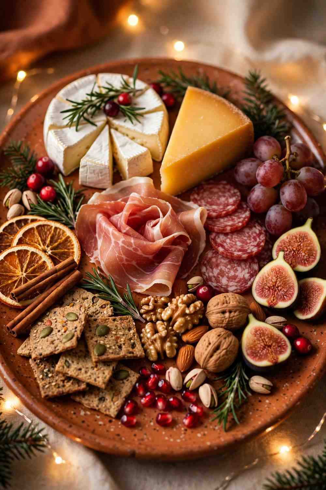
A big board with a mix of cheeses, cured meats, crackers, fruit, and nuts, arranged with rosemary sprigs for a festive look. The board is the centerpiece.
Ingredients
- 8 ounces sharp cheddar, cut into cubes
- 8 ounces brie, whole
- 8 ounces gouda, sliced
- 4 ounces blue cheese
- 6 ounces cured meats (salami and prosciutto)
- 1 cup grapes
- 1/2 cup dried cranberries
- 1/2 cup mixed nuts
- 1 box crackers
- Fresh rosemary sprigs, for garnish
Directions
- Place the cheeses on a large board, spacing them apart.
- Fold and arrange the cured meats between the cheeses.
- Fill the gaps with grapes, cranberries, nuts and crackers.
- Tuck in rosemary sprigs and serve at room temperature.
16. Baked Brie en Croûte

Brie wrapped in puff pastry and baked until the outside is golden and the inside is molten. Serve with crackers and sliced apples.
Ingredients
- 1 sheet puff pastry, thawed
- 1 round brie cheese (8 ounces)
- 1/4 cup apricot jam or cranberry sauce
- 1/4 cup chopped pecans
- 1 egg, beaten (for egg wash)
Directions
- Preheat the oven to 400°F and line a baking sheet with parchment paper.
- Unfold the puff pastry on the baking sheet and place the brie in the center.
- Spoon the jam over the top of the brie and sprinkle with pecans.
- Fold the pastry up around the brie, sealing the edges, and brush with beaten egg.
- Bake for 20-25 minutes, until the pastry is deep golden.
- Let it stand for 10 minutes, then serve with crackers and sliced apples.
17. Goat Cheese & Cranberry Log
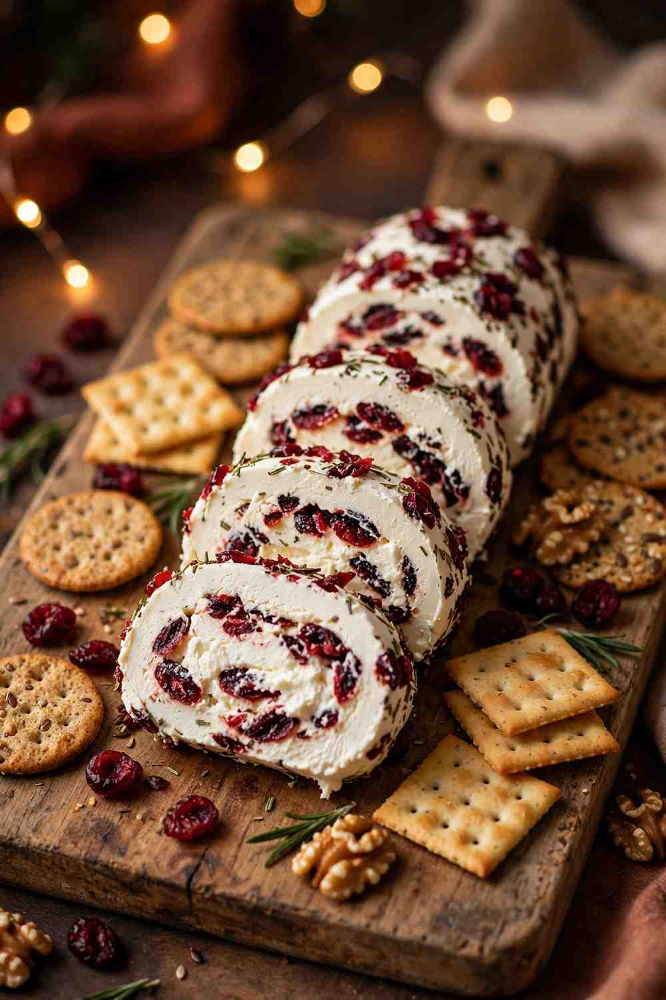
A creamy goat cheese log rolled in dried cranberries and chopped nuts. Slice it at the table and serve with water crackers.
Ingredients
- 8 ounces goat cheese, softened
- 4 ounces cream cheese, softened
- 1/2 cup dried cranberries, finely chopped
- 1/2 cup chopped pecans
- 1 tablespoon honey
- 1/2 teaspoon orange zest
Directions
- Beat the goat cheese and cream cheese together with the honey and orange zest until smooth.
- Shape the mixture into a log on a sheet of plastic wrap and chill for 1 hour.
- Mix the cranberries and pecans on a plate.
- Unwrap the log and roll it in the cranberry-pecan mixture until coated.
- Slice at the table and serve with water crackers.
18. Classic Cheese Ball
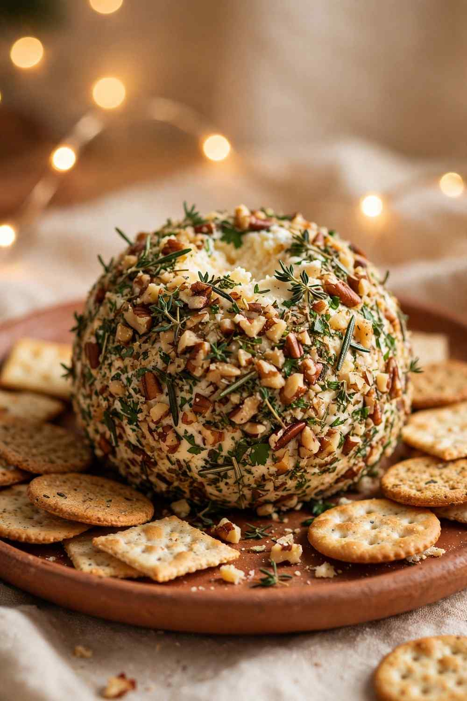
The retro party favorite: a savory cheese ball rolled in nuts or herbs, served with crackers. It is easy to make ahead and always gets eaten.
Ingredients
- 8 ounces cream cheese, softened
- 2 cups shredded sharp cheddar
- 1/4 cup finely chopped green onions
- 1 teaspoon Worcestershire sauce
- 1/2 teaspoon garlic powder
- 1/2 cup chopped pecans
- 1/4 cup chopped fresh parsley
Directions
- Beat the cream cheese, cheddar, green onions, Worcestershire sauce and garlic powder together until combined.
- Shape the mixture into a ball, wrap in plastic wrap, and chill for 2 hours.
- Mix the pecans and parsley on a plate.
- Unwrap the cheese ball and roll it in the pecan mixture until coated.
- Serve with crackers.
19. Marinated Mozzarella & Tomatoes

Small mozzarella balls and cherry tomatoes marinated in olive oil, garlic, and herbs. Light, fresh, and a nice contrast to the richer boards.
Ingredients
- 8 ounces small fresh mozzarella balls
- 1 pint cherry tomatoes, halved
- 1/4 cup olive oil
- 2 tablespoons balsamic vinegar
- 2 garlic cloves, minced
- 2 tablespoons chopped fresh basil
- 1/2 teaspoon salt
- 1/4 teaspoon black pepper
Directions
- Whisk the olive oil, balsamic vinegar, garlic, salt and pepper together in a bowl.
- Add the mozzarella and tomatoes and toss to coat.
- Cover and marinate for at least 30 minutes, or up to 4 hours in the refrigerator.
- Stir in the basil just before serving.
20. Spiced Nuts Trio

Almonds, pecans, and cashews tossed with warm spices and a touch of sweetness. Fill small bowls around the table for grazing.
Ingredients
- 1 cup raw almonds
- 1 cup raw pecans
- 1 cup raw cashews
- 2 tablespoons maple syrup
- 1 teaspoon ground cinnamon
- 1/2 teaspoon ground nutmeg
- 1/2 teaspoon salt
- 1/4 teaspoon cayenne pepper (optional)
Directions
- Preheat the oven to 325°F and line a baking sheet with parchment paper.
- Toss the nuts with the maple syrup, cinnamon, nutmeg, salt and cayenne.
- Spread in a single layer on the baking sheet.
- Roast for 20-25 minutes, stirring halfway through, until fragrant and toasted.
- Cool completely, then fill small bowls around the table.
21. Fig & Prosciutto Crostini
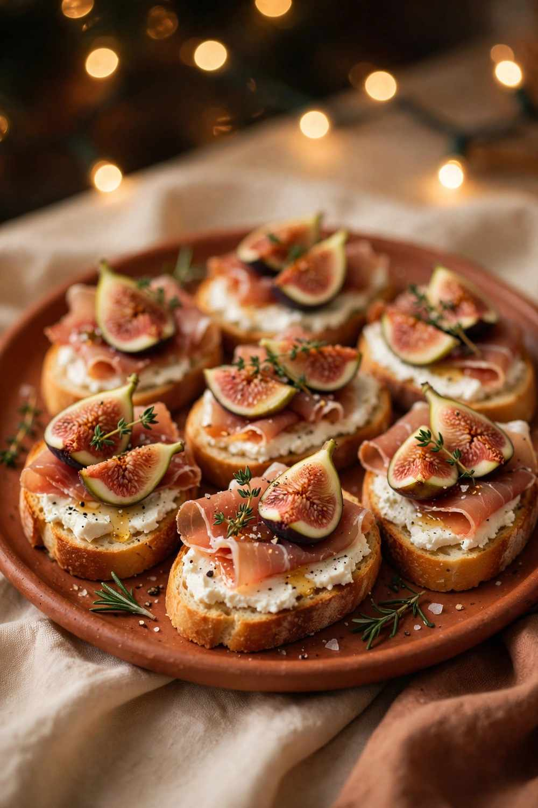
Toasted baguette slices with fig spread, prosciutto, and a soft cheese. Sweet, salty, and elegant without any effort.
Ingredients
- 1 baguette, sliced into 24 rounds
- 2 tablespoons olive oil
- 1/2 cup fig spread
- 4 ounces soft goat cheese or brie
- 6 slices prosciutto, torn into pieces
- 1 tablespoon honey
- Fresh thyme leaves, for garnish
Directions
- Preheat the oven to 375°F and line a baking sheet with parchment paper.
- Brush the baguette slices with olive oil and bake for 8-10 minutes, until crisp and golden.
- Spread each toast with fig spread and a smear of cheese.
- Top with a piece of prosciutto and drizzle with honey.
- Garnish with thyme and serve.
Warm & baked appetizers
Warm appetizers are the ones guests remember — the smell alone pulls people into the kitchen.
22. Sausage Rolls

Flaky pastry wrapped around seasoned sausage, baked until golden. Cut them small for a crowd and serve with mustard.
Ingredients
- 1 sheet puff pastry, thawed
- 1 pound bulk pork sausage
- 1 small onion, finely diced
- 1 teaspoon dried sage
- 1/2 teaspoon black pepper
- 1 egg, beaten (for egg wash)
- 1 tablespoon sesame seeds (optional)
Directions
- Preheat the oven to 400°F and line a baking sheet with parchment paper.
- Mix the sausage, onion, sage and pepper together in a bowl.
- Cut the puff pastry sheet in half and spoon half the sausage mixture down the center of each half.
- Roll the pastry around the filling, seal the edges, and cut into 24 small rolls.
- Brush with beaten egg and sprinkle with sesame seeds if you like.
- Bake for 20-25 minutes, until golden and cooked through.
- Serve warm with mustard.
Food safety: cook the pork sausage to 160°F (71°C) — check with a food thermometer.
23. Mini Quiches

Tiny quiches with cheese, herbs, and vegetables in a crisp crust. They bake in batches and hold well on a warming tray.
Ingredients
- 1 package (15 ounces) refrigerated pie crusts
- 4 large eggs
- 1/2 cup heavy cream
- 1 cup shredded cheddar or Gruyère cheese
- 1/2 cup finely diced vegetables (spinach, bell pepper, or mushrooms)
- 1/4 teaspoon salt
- 1/4 teaspoon black pepper
Directions
- Preheat the oven to 375°F and grease a 24-cup mini muffin tin.
- Cut the pie crust into 24 rounds and press each into a muffin cup.
- Whisk the eggs, cream, salt and pepper together, then stir in the cheese and vegetables.
- Spoon the filling into each crust.
- Bake for 15-18 minutes, until the filling is set and the crust is golden.
- Cool for 5 minutes, then serve warm or at room temperature.
24. Puff Pastry Pinwheels
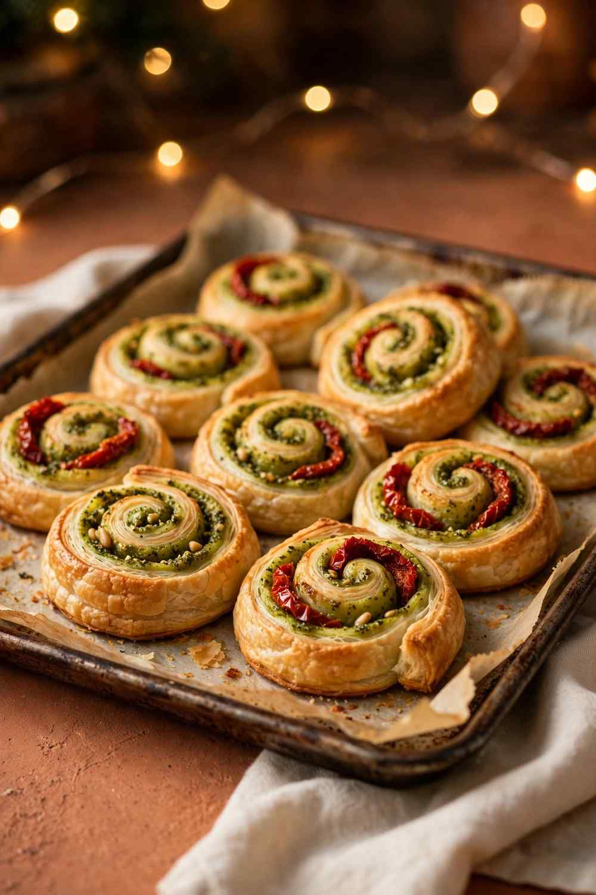
Pastry rolled with pesto, cheese, or sun-dried tomato and sliced into spirals. They look impressive and take minutes to assemble.
Ingredients
- 1 sheet puff pastry, thawed
- 1/3 cup pesto
- 1/2 cup shredded mozzarella
- 1/4 cup chopped sun-dried tomatoes
- 1 egg, beaten (for egg wash)
Directions
- Preheat the oven to 400°F and line a baking sheet with parchment paper.
- Unfold the puff pastry and spread the pesto evenly over it.
- Sprinkle with mozzarella and sun-dried tomatoes.
- Roll the pastry into a tight log and chill for 15 minutes.
- Slice into 24 pinwheels and place them on the baking sheet.
- Brush with beaten egg and bake for 15-18 minutes, until puffed and golden.
25. Cranberry Meatballs
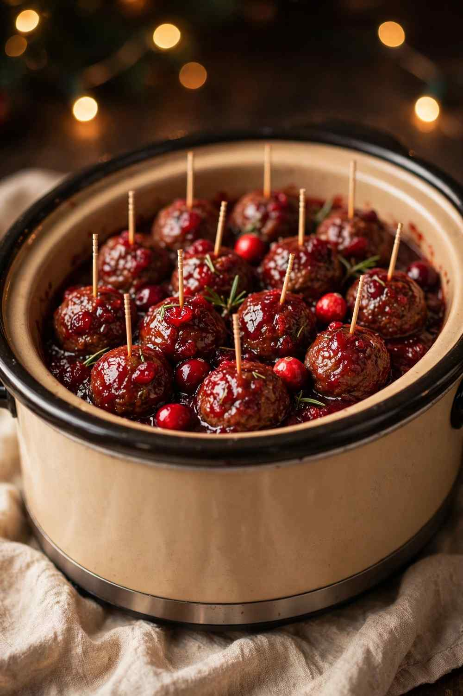
Small meatballs simmered in a cranberry glaze — sweet, savory, and made for a slow cooker. Toothpicks at the ready.
Ingredients
- 1 pound frozen cooked meatballs
- 1 can (14 ounces) whole-berry cranberry sauce
- 1/2 cup chili sauce
- 2 tablespoons brown sugar
- 1 tablespoon lemon juice
Directions
- Stir the cranberry sauce, chili sauce, brown sugar and lemon juice together in a slow cooker.
- Add the meatballs and stir to coat.
- Cook on low for 2-3 hours, until the meatballs are heated through and the glaze is bubbling.
- Keep warm on the low setting and serve with toothpicks.
Food safety: heat the meatballs until steaming hot throughout.
26. Spinach & Feta Triangles
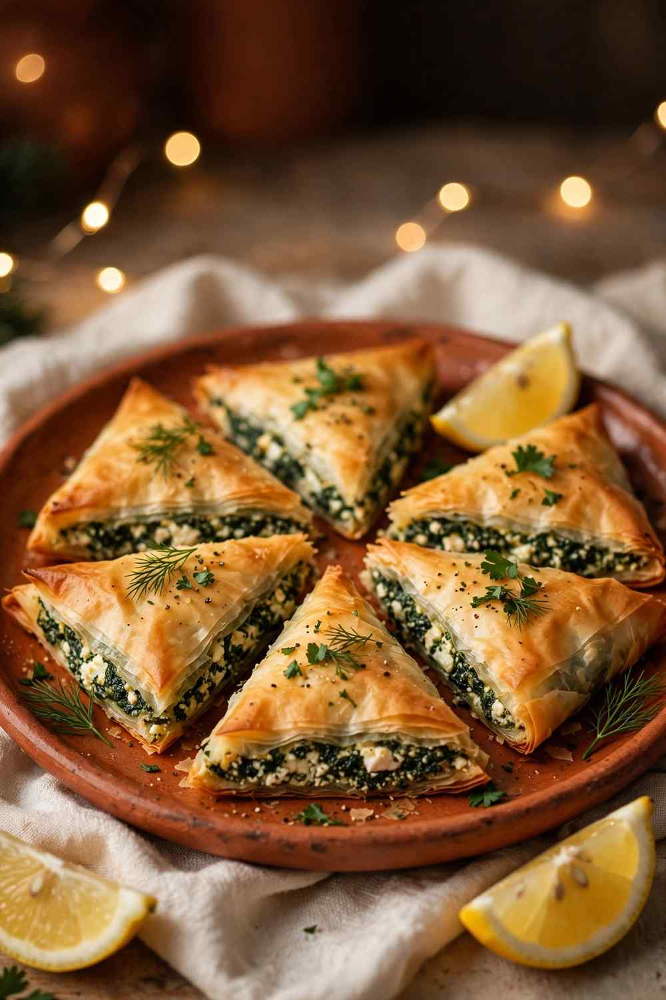
Crisp phyllo triangles filled with spinach and feta. They are light, flaky, and easy to eat standing up.
Ingredients
- 10 ounces frozen chopped spinach, thawed and squeezed dry
- 8 ounces feta cheese, crumbled
- 1 egg
- 2 green onions, finely chopped
- 1/2 teaspoon dried dill
- 1/4 teaspoon black pepper
- 1 package (16 ounces) phyllo dough, thawed
- 1/2 cup melted butter
Directions
- Preheat the oven to 375°F and line a baking sheet with parchment paper.
- Stir the spinach, feta, egg, green onions, dill and pepper together in a bowl.
- Cut the phyllo into strips, brush each strip with melted butter, and spoon a teaspoon of filling at one end.
- Fold each strip into a triangle, brushing with butter as you fold.
- Place the triangles on the baking sheet and brush the tops with butter.
- Bake for 18-20 minutes, until crisp and golden.
27. Stuffed Mushrooms

Mushroom caps filled with a savory breadcrumb and cheese stuffing, baked until golden. A classic for a reason.
Ingredients
- 24 large white mushrooms, stems removed and finely chopped
- 2 tablespoons butter
- 2 garlic cloves, minced
- 1/2 cup breadcrumbs
- 1/2 cup grated Parmesan cheese
- 2 tablespoons chopped fresh parsley
- 1/2 teaspoon salt
- 1/4 teaspoon black pepper
Directions
- Preheat the oven to 375°F and line a baking sheet with parchment paper.
- Melt the butter in a skillet and cook the chopped mushroom stems and garlic for 5 minutes.
- Stir in the breadcrumbs, Parmesan, parsley, salt and pepper.
- Spoon the filling into the mushroom caps and place them on the baking sheet.
- Bake for 18-20 minutes, until the mushrooms are tender and the tops are golden.
28. Bacon-Wrapped Smokies
Little sausages wrapped in bacon with a touch of brown sugar, baked until crisp. Sweet, smoky, and dangerously easy to keep eating.
Ingredients
- 1 package (14 ounces) cocktail smokies
- 12 slices bacon, cut into thirds
- 1/2 cup brown sugar
- 1/4 teaspoon cayenne pepper (optional)
- 24 toothpicks
Directions
- Preheat the oven to 350°F and line a baking sheet with parchment paper.
- Wrap each smokie with a piece of bacon and secure with a toothpick.
- Place seam-side down on the baking sheet and sprinkle with brown sugar and cayenne.
- Bake for 25-30 minutes, until the bacon is crisp and caramelized.
- Drain briefly and serve warm.
Food safety: heat the smokies until steaming hot throughout and cook the bacon until crisp.

Sweet & savory crowd-pleasers
These are the bites that blur the line between appetizer and dessert — and the ones guests ask about on the way home.
29. Cranberry & Brie Puff Bites

Golden puff pastry squares with melted brie and a spoonful of cranberry sauce. Festive, flaky, and gone in minutes.
Ingredients
- 1 sheet puff pastry, thawed
- 8 ounces brie cheese, cut into 24 small cubes
- 1/2 cup whole-berry cranberry sauce
- 1 egg, beaten (for egg wash)
- 2 tablespoons chopped pecans
Directions
- Preheat the oven to 375°F and line a baking sheet with parchment paper.
- Cut the puff pastry into 24 squares and place them on the baking sheet.
- Place a cube of brie on each square and spoon a teaspoon of cranberry sauce on top.
- Brush the pastry edges with beaten egg and sprinkle with pecans.
- Bake for 15-18 minutes, until the pastry is puffed and golden and the brie is melted.
- Cool for 5 minutes, then serve warm.
30. Apple & Cheddar Bites
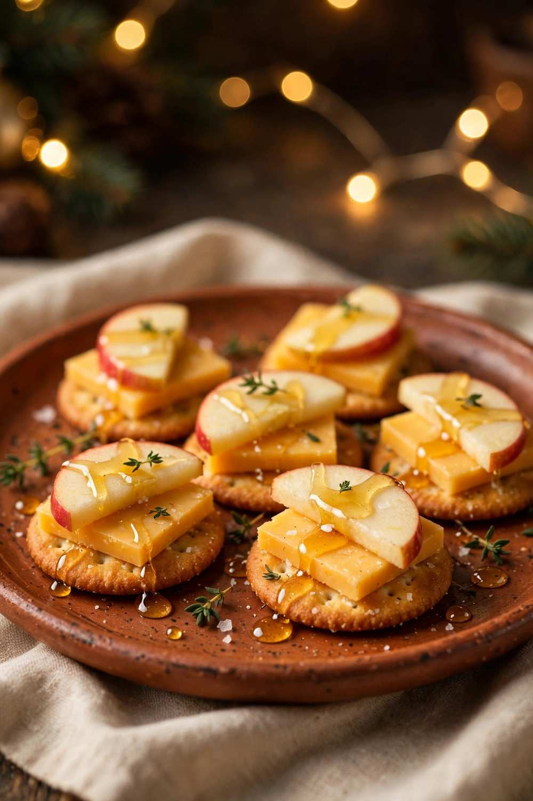
Crisp apple slices with sharp cheddar on a cracker, finished with a drizzle of honey. Sweet, salty, and crunchy in one bite.
Ingredients
- 2 crisp apples (such as Honeycrisp), cut into 24 thin slices
- 8 ounces sharp cheddar, cut into 24 small squares
- 24 round crackers
- 2 tablespoons honey
- 1 tablespoon lemon juice
Directions
- Toss the apple slices with lemon juice to keep them from browning.
- Place a slice of apple and a square of cheddar on each cracker.
- Drizzle with honey and serve right away.
31. Pear & Gorgonzola Crostini

Ripe pear and creamy gorgonzola on toasted bread with a few walnuts. An elegant bite that tastes like a cheese course.
Ingredients
- 1 baguette, sliced into 24 rounds
- 2 tablespoons olive oil
- 2 ripe pears, thinly sliced
- 6 ounces gorgonzola cheese, crumbled
- 1/4 cup chopped walnuts
- 2 tablespoons honey
Directions
- Preheat the oven to 375°F and line a baking sheet with parchment paper.
- Brush the baguette slices with olive oil and bake for 8-10 minutes, until crisp and golden.
- Top each toast with a slice of pear and a spoonful of gorgonzola.
- Sprinkle with walnuts, drizzle with honey, and serve.
32. Honey-Glazed Cocktail Sausages
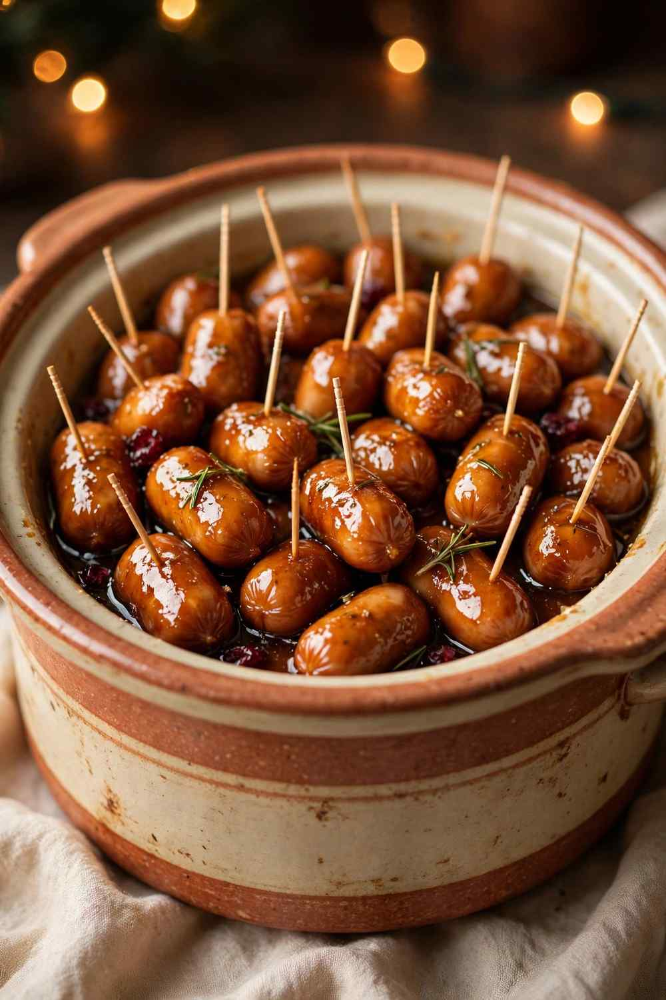
Small sausages glazed with honey and mustard, kept warm in a slow cooker. The glaze is sweet, tangy, and sticky in the best way.
Ingredients
- 1 pound cocktail sausages
- 1/3 cup honey
- 2 tablespoons Dijon mustard
- 1 tablespoon soy sauce
- 1/2 teaspoon garlic powder
Directions
- Stir the honey, mustard, soy sauce and garlic powder together in a slow cooker.
- Add the sausages and stir to coat.
- Cook on low for 2 hours, until the sausages are heated through and the glaze is sticky.
- Keep warm on the low setting and serve with toothpicks.
Food safety: heat the cocktail sausages until steaming hot throughout.
33. Maple-Glazed Bacon Bites
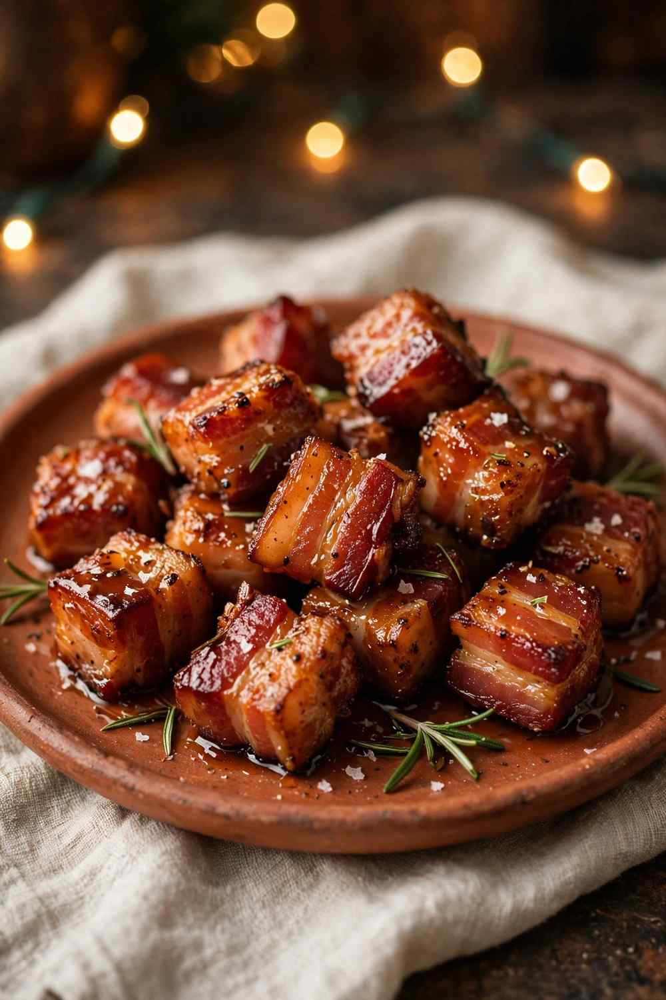
Thick-cut bacon brushed with maple and baked until crisp at the edges. Sweet, smoky, and impossible to stop at one.
Ingredients
- 1 pound thick-cut bacon, cut into 2-inch pieces
- 1/4 cup maple syrup
- 1 tablespoon brown sugar
- 1/4 teaspoon black pepper
Directions
- Preheat the oven to 375°F and line a baking sheet with parchment paper.
- Arrange the bacon pieces in a single layer on the baking sheet.
- Brush with maple syrup and sprinkle with brown sugar and black pepper.
- Bake for 20-25 minutes, flipping halfway through, until crisp at the edges.
- Drain on paper towels and serve warm.
Food safety: cook the bacon until crisp.
34. Cinnamon-Spiced Pecans
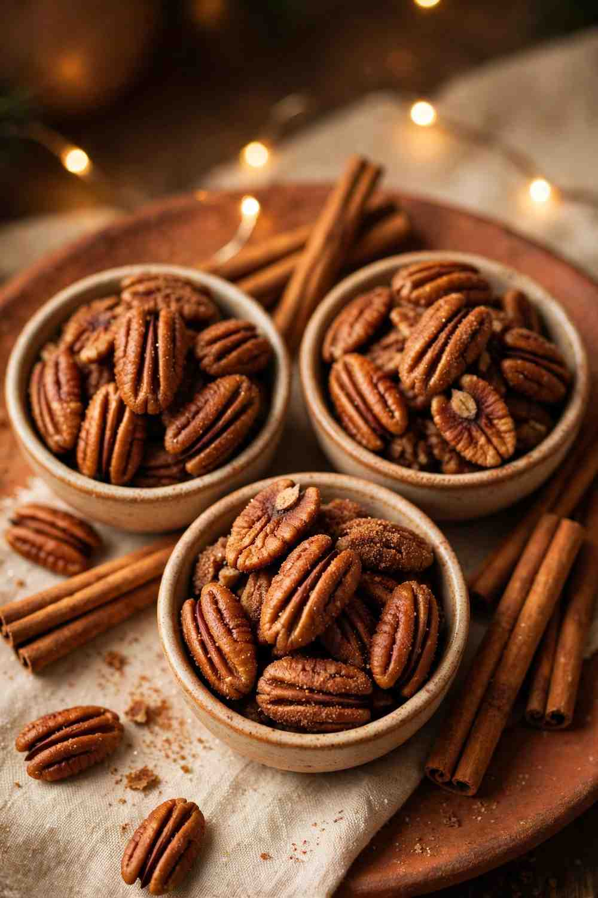
Pecans tossed with cinnamon, sugar, and a pinch of salt, roasted until fragrant. Fill small bowls and scatter them around the room.
Ingredients
- 3 cups raw pecan halves
- 1/4 cup granulated sugar
- 1 tablespoon ground cinnamon
- 1/2 teaspoon salt
- 1 egg white
- 1 teaspoon vanilla extract
Directions
- Preheat the oven to 300°F and line a baking sheet with parchment paper.
- Whisk the egg white and vanilla together in a large bowl until frothy.
- Add the pecans and toss to coat.
- Stir the sugar, cinnamon and salt together, then toss with the pecans.
- Spread in a single layer on the baking sheet.
- Bake for 30 minutes, stirring every 10 minutes, until dry and fragrant.
- Cool completely, then fill small bowls.
35. Chocolate-Dipped Pretzels
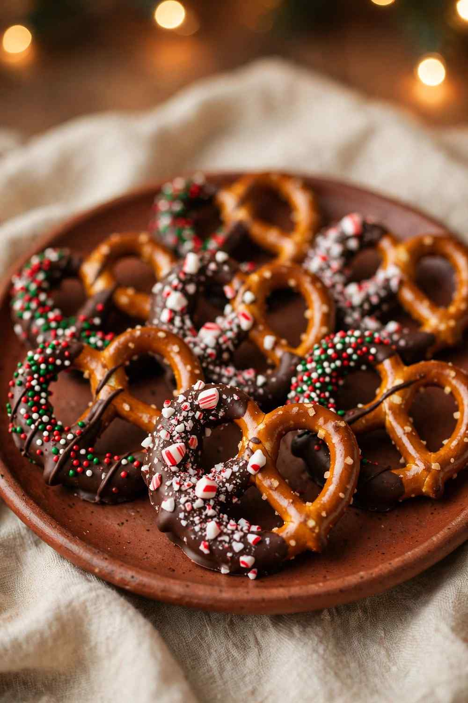
Crunchy pretzels dipped in chocolate and finished with sprinkles or crushed candy cane. Sweet, salty, and a hit with kids and adults alike.
Ingredients
- 24 pretzel rods or large pretzel twists
- 12 ounces semisweet or milk chocolate chips
- 1 tablespoon coconut oil
- 1/4 cup holiday sprinkles
- 1/4 cup crushed candy cane
Directions
- Line a baking sheet with parchment paper.
- Melt the chocolate chips with the coconut oil in a microwave-safe bowl in 30-second bursts, stirring until smooth.
- Dip each pretzel halfway into the chocolate, letting the excess drip off.
- Place on the baking sheet and sprinkle with sprinkles or crushed candy cane.
- Let the chocolate set for 30 minutes at room temperature, or chill for 15 minutes.
What to serve with them
Appetizers need drinks more than they need more food: a festive punch or sparkling cider, a simple cocktail, and plenty of water. Around them, keep the table simple — a bowl of olives, a few extra crackers, and a small bowl of good mustard. If dinner follows, keep the appetizers light so guests still have room; if the appetizers ARE the party, add a soup or a salad and call it dinner. The best party table is one where the host is not stuck in the kitchen — so choose mostly make-ahead bites and one warm dish.
Make-ahead tips
Almost everything in this roundup can be prepped ahead: dips can be made the day before, cheese boards can be assembled in the morning, and skewers can be built a few hours ahead and kept cold. Bake the warm appetizers just before guests arrive, and keep them warm in a low oven or a slow cooker. Store leftovers in the refrigerator and use them within a few days; dips and cheese keep well, while pastry bites are best reheated in the oven so they crisp up again.
Related articles
More roundups from the same table:
- 30+ Christmas Cookie Recipes Everyone Will Love — classic, chocolate, spiced, filled and decorated cookies.
- 25+ No-Bake Christmas Desserts for a Crowd — truffles, cheesecakes, bars and treats.
- 25+ Christmas Side Dishes for Your Holiday Table — roasted vegetables, creamy potatoes, stuffing and cranberry sauce.
- 25+ Easy New Year's Eve Appetizers for a Crowd — bite-size party snacks, dips and finger foods.
Keep exploring
- Browse the Appetizers & Snacks roundups — starters, party bites and snacks for every gathering.
- Browse all six categories — breakfast, lunch and dinner, desserts, air fryer, healthy recipes, and appetizers.
- More about the kitchen — what The Tasty Recipe Co is and how it works.
About The Tasty Recipe Co: Learn how we research, organize and review our food collections — see our About Us and Editorial Policy pages.
Recipe results can vary with ingredients, equipment, and technique. See our Disclaimer for food-safety and allergy notes.